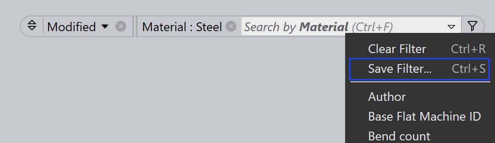

Filters opslaan
Opgeslagen filters stellen u in staat om veelgebruikte criteria in Onderdelen, Jobs en Layouts opnieuw te gebruiken, waardoor uw workflow wordt gestroomlijnd. Elke module wordt geleverd met standaard filters, maar aanvullende filterlijsten kunnen indien nodig worden aangemaakt door Site Admins of Programmeurs. Het hergebruiken van opgeslagen filters bespaart tijd en helpt de consistentie tussen zoekopdrachten te behouden.
-
Klik op het
 pictogram om de standaardfilters te bekijken.
pictogram om de standaardfilters te bekijken.
Stappen om filters op te slaan
-
Klik op het
 pictogram en selecteer een filteritem.
pictogram en selecteer een filteritem.
-
Kies een optie uit het dropdownmenu van het geselecteerde filteritem. Een vinkje verschijnt naast de geselecteerde conditie.

-
Om de conditie toe te passen, klikt u op het
pictogram en selecteert u vervolgens
Voorwaarde toevoegen (Ctrl+PLUS)]. U kunt deze
stap herhalen om meerdere condities toe te voegen.
-
Om deze geselecteerde filters met condities op te slaan, klikt u op Filter opslaan… (Ctrl+S)].

-
Voer de naam in en klik vervolgens op _Opslaan.

-
Vanuit het dialoogvenster Filter opslaan kunt u ook eerder opgeslagen filters verwijderen.
-
Deze filters worden opgeslagen in de standaard filterlijst. Hier wordt Materiaal opgeslagen in de standaardlijst.

| Filters aangemaakt door SiteAdmin en Admin worden gedeeld met alle gebruikers. Filters aangemaakt door Programmeur en Operator worden alleen gedeeld met gebruikers met de rollen Programmeur en Operator. |
Filteropdrachten
| Opdracht | Pictogram | Sneltoetsen | Beschrijving |
|---|---|---|---|
Clear Selection |
|
Ctrl+X |
Deselecteert alle geselecteerde keuzes en vernieuwt de filteritemweergave. |
Select Highlighted |
|
Ctrl+A |
Selecteert alle gemarkeerde keuzes. Deze opdracht blijft uitgeschakeld als itemmarkering niet van toepassing is voor het geselecteerde veld. |
Match All |
|
& |
Toont alleen items die aan alle geselecteerde condities voldoen. |
Pin In/Out Menu |
|
Ctrl+Down/Up |
Wanneer vastgepind, blijft het dropdownmenu open, zelfs wanneer de huidige focus naar een ander venster verplaatst. |
Close Menu |
|
Esc |
Sluit het dropdownmenu. |